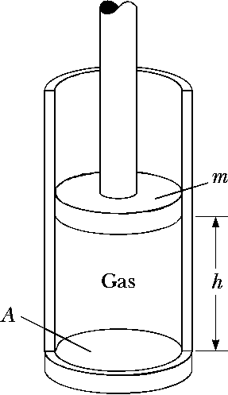
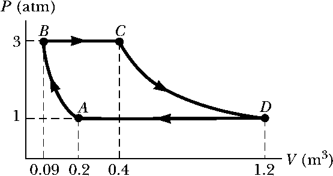

Homework E - Thermal Physics
Problem 10.1
An automobile tire is inflated with air originally at \(10.0^\circ C\) and normal atmospheric pressure. During the process, the air is compressed to \(28.0\%\) of its original volume and the temperature is increased to \(40.0^\circ C\).
- What is the tire pressure?
- After the car is driven at high speed, the tire’s air temperature rises to \(85.0^\circ C\) and the tire’s interior volume increases by \(2.00\%\). What is the new tire pressure (absolute)?
Problem 10.2
A vertical cylinder of crosssectional area \(A\) is fitted with a tight-fitting, frictionless piston of mass \(m\) (See figure). The piston is not restricted in its motion in any way and is supported by the gas at pressure \(P\) below it. Atmospheric pressure is \(P_0\). We wish to find the height \(h\).
- What analysis model is appropriate todescribe the piston?
- Write an appropriate force equation for the piston from this analysis model in terms of \(P\), \(P_0\), \(m\), \(A\), and \(g\).
- Suppose \(n\) moles of an ideal gas are in the cylinder at an ideal gas are in the cylinder at a temperature of \(T\). Substitute for \(P\) in your answer to part (b) to find the height h of the piston above the bottom of the cylinder.

Problem 10.3
Take the definition of the coefficient of volume expansion to be \[\beta = \frac{1}{V} \frac{dV}{dT} \bigg|_{P=constant} = \frac{1}{V} \frac{\partial V}{\partial T}\]
- Use the equation of state for an ideal gas to show that the coefficient of volume expansion for an ideal gas at constant pressure is given by \(\beta = 1/T\), where \(T\) is the absolute temperature.
- What value does this expression predict for \(\beta\) at \(0^\circ C\)?
- State how this result compares with the experimental values for helium.
- State how this result compares with the experimental values for air.
Note: These values are much larger than the coefficients of volume expansion for most liquids and solids.
Problem 10.4
Steam at \(100^\circ C\) is added to ice at \(0^\circ C\).
- Find the amount of ice melted and the final temperature when the mass of steam is \(10.0~g\) and the mass of ice is \(50.0~g\).
- Repeat when the mass of steam is \(1.00~g\)
and the mass of ice is \(50.0~g\).
Problem 10.5
A sample of an ideal gas goes through the process shown in the below figure. From \(A\) to \(B\), the process is adiabatic; from \(B\) to \(C\), it is isobaric with \(345~kJ\) of energy entering the system by heat; from \(C\) to \(D\), the process is isothermal; and from \(D\) to \(A\), it is isobaric with \(371~kJ\) of energy leaving the system by heat. Determine the difference in internal energy \(E_{int,B} - E_{int,A}\).

Problem 10.6
One mole of an ideal gas is contained in a cylinder with a movable piston. The initial pressure, volume, and temperature are \(P_i\) , \(V_i\), and \(T_i\), respectively. Find the work done on the gas in the following processes. In operational terms, describe how to carry out each process and show each process on a \(PV\) diagram.
- an isobaric compression in which the final volume is one-half the initial volume
- an isothermal compression in which the final pressure is four times the initial pressure
- an isovolumetric process in which the final pressure is three times the initial pressure